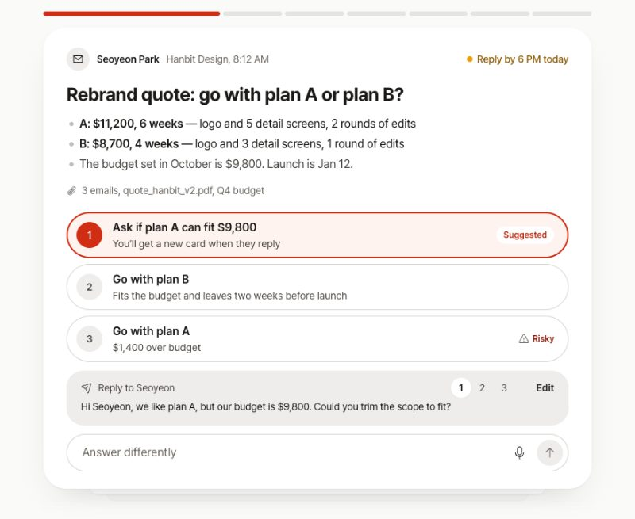
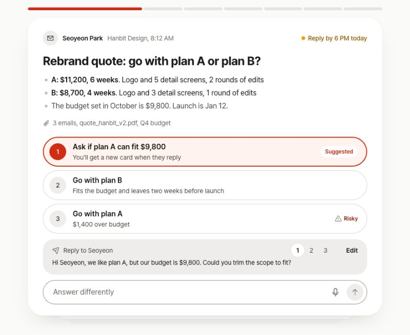
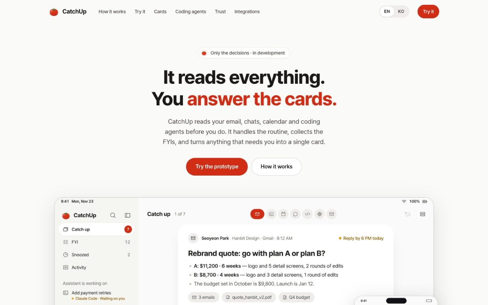
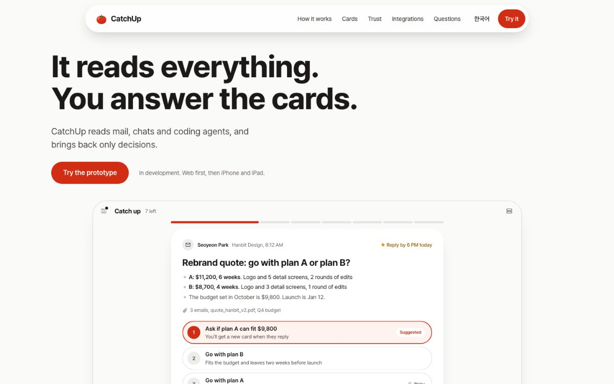
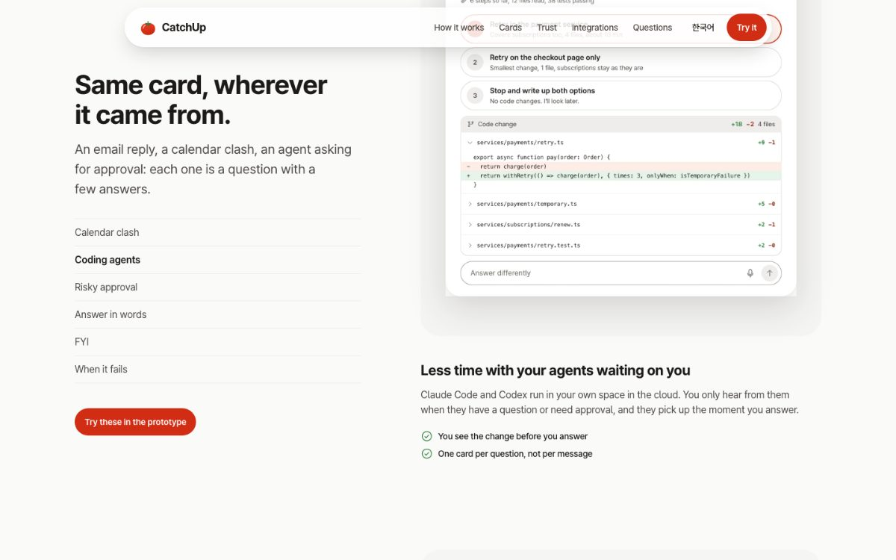
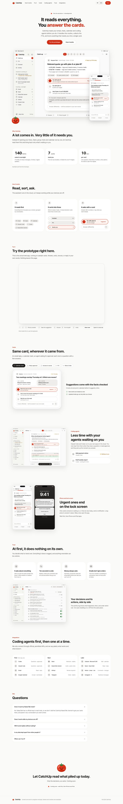
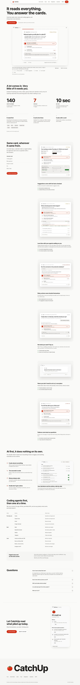
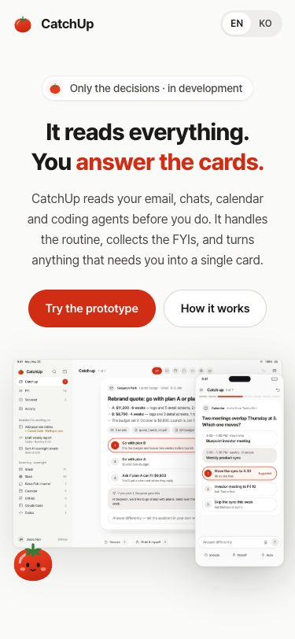
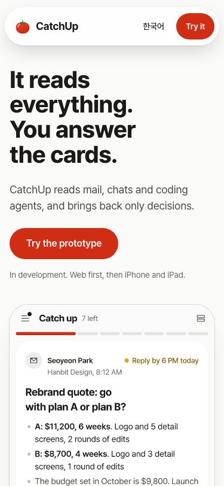

모두 main에 합쳤고, 소개 페이지는 모노레포 앱으로 다시 짰어요
흩어져 있던 작업을 main에 합친 뒤, 가장 최신 main에서 Hallmark(AI가 만든 티가 나는 화면을 규칙과 검사 도구로 걸러 내는 디자인 스킬) 검토를 다시 했어요. 앱은 조금만 다듬었고, 소개 페이지는 다시 짜면서 한 파일을 올리던 방식을 apps/landing 워크스페이스 앱으로 바꿨어요. 이 문서는 무엇을 바꿨는지와 정해 주실 것을 보여 줘요.
feat/local-backend 하나였고(커밋 51개, 뒤처진 것 0), 빨리감기로 합쳤어요. 합친 main에서 웹과 API 시험이 모두 통과했어요.숫자로 보면
같은 sloplint(Hallmark 검사 도구)를 고치기 전과 뒤에 같은 폭으로 돌렸어요. 앱은 덱, 알려만 드려요, 처리 기록, 토마토가 아는 것, 한국어 덱의 다섯 화면이에요.
| 시험 | 결과 | 어디서 |
|---|---|---|
| 웹 타입 검사와 단위 시험 | 63/63 | 합친 main, 고친 뒤 모두 |
| 웹 e2e | 164 통과 | 합친 main, 고친 뒤 모두 |
| API 시험lib, schema.sh, stage2 | 78, 통과, 59 | 합친 main(로컬 백엔드를 띄워서) |
| 소개 페이지 e2e새로 만듦 | 10/10 | 375, 1440. 두 언어, 언어 기억, 넘침, 그림, 스크립트 없이 |
합치기
다른 브랜치, 원격 브랜치, 워크트리는 없었어요. 지난 검토 브랜치는 전에 지워 두었어요.
- feat/local-backend → main커밋 51개를 빨리감기로 합쳤어요(main f200e81 → dd38b42). 2단계 서버, 3.6단계 기억과 약속, 모바일 검토 고침, design.md 17장이 모두 들어 있어요.
- 합친 main에서 시험웹 타입 검사, 단위 63, e2e 164 통과. 로컬 백엔드를 띄워 API 시험(lib 78, schema.sh, stage2 59)도 통과했어요.
- 검토는 새 브랜치에서이번 고침은 main에서 딴
design/hallmark-2에 커밋 5개(이 보고서 포함)로 있어요. main에 합칠지는 아래 정해 주세요에 있어요.
앱: 조금만 다듬었어요
polish 깊이(배치는 두고 걸린 것만). 커밋 f702a92 디자인 시스템, f5c6db6 앱.

— logo and 5 detail screens, 입력창 테두리 1.46:1
- 토큰 밖 색을 토큰으로 올렸어요. 다크에서 밝아지는 토스트 위의 흰 글자가 사라지던 것도 막아요.
- 입력창 테두리는
--cu-line-field(흰 바탕 3.25:1). 비활성 단추는 흐림과 not-allowed 커서, 누르는 것은 모두 눌림 바탕. - 다크에서 고른 답의 번호가 흰 원 위 밝은 주황이라 2.56:1이었어요. 흰 원 위 강조 칠 색으로 4.67:1.
- 예시 카드 글의 긴 대시 8곳을 마침표와 콜론으로. 같은 문구를 찾던 e2e 한 곳도 맞췄어요.
body의 overflow hidden은 clip으로, 덱 고스트는 보이는 데서 사라지게, 제목은 줄바꿈 균형.
- 덱의 동작, 배치, 카드 크기. 덱 화면은 위 두 그림처럼 거의 그대로예요.
- 4px 눈금 밖 간격 91곳(24b)은 polish에서는 기록만 해요. 맞추면 앱 전체가 1~2px씩 움직여요.
- 지난 검토의 가운뎃점 고침은 이미 main 문구에 거의 들어가 있어서(번역 파일에 가운뎃점 0), 다시 할 게 없었어요.
소개 페이지: 다시 짰어요
full 깊이(글과 연결은 두고 체계와 구성을 바꿔요). 브랜드(토마토, 따뜻한 회색, Pretendard, 알약 단추)는 그대로예요. 커밋 efb6364, c1859c2.


첫 화면 바로 아래에서 덱을 넘겨 봐요
- CatchUp의 차별점은 카드를 훅훅 넘기며 정하는 경험이에요. 전에는 넷째 장에서야 해 볼 수 있었어요.
- 마무리 검토에서 "첫 화면에 카드가 안 보인다"가 첫째 지적이었어요. 써 보기의 제목 묶음을 걷고 덱을 첫 화면 40px 아래로 붙였어요.
- 휴대폰에서는 휴대폰 화면 캡처와 "Try the prototype" 단추(새 탭)예요.
- 첫 화면 가까이에서 앱을 바로 실어서 첫 화면이 조금 무거워져요.
- 장 사이가 40px로 Hallmark 권장(120px)보다 좁아요. 이 장은 제목이 없는 첫 화면의 연장이라 도장에 근거를 적었어요.
카드 다섯 탭을 흐르는 카드 여섯 장으로

- 그림은 손으로 그린 시안 조각이 아니라 실제 앱 캡처예요(
scripts/shots.mjs). 달력 조각, 파일마다 접는 코드 변경, 말로 답하면 새로 나온 선택지까지 지금 앱 그대로예요. - 휴대폰에서는 넓게 찍은 카드를 줄이면 글자가 6~7px가 돼서, 휴대폰 화면째 찍은 그림으로 바꿔 끼워요(
<picture>). - 따로 있던 코딩 에이전트 장은 이 흐름의 한 장이 됐어요. 주소
#agents는 그대로 그 카드로 가요.
12장에서 8장으로
| 지금 장 | 무엇이 바뀌었나 |
|---|---|
| 첫 화면 | 알약 머리글과 빨간 단어를 빼고 제목 한 색. 설명은 29단어에서 한 문장(12단어). 단추 하나 |
| 써 보기 | 제목 없이 첫 화면 바로 아래. 설명은 덱 아래 캡션으로 |
| 들어온 것과 정할 것 | 왜와 어떻게를 한 장에. 140, 7, 10초를 세 단계와 같은 세 칸에. 상자 타일은 걷었어요 |
| 카드 | 탭 다섯을 흐르는 카드 여섯으로(코딩 에이전트 합침) |
| 안심 | 아이콘 상자 넷을 줄 목록으로, 옆에 처리 기록 캡처 |
| 연결 | 세 칸 카드를 표 하나로. 잠금 화면 이야기는 표 아래 띠로(그림은 뺐어요, 아래 참고) |
| 묻고 답하기 | 제목은 왼쪽, 질문은 오른쪽 |
| 끝 | "곧 공개" 알약 대신 단추 둘과 다 봤어요 화면(7개를 52초에) |




지킨 것과 뺀 것
- 지킨 것: 모든 글(Hallmark가 짚은 줄만 고쳐 썼어요), 위 막대의 장 주소, 써 보기의
proto,protoReset,protoOpen,protoOpenPhone, 언어 기억,?lang=ko. - 뺀 것: 카드 탭(흐르는 카드로), 손으로 그린 아이패드와 아이폰과 잠금 화면 그림, 숫자 셋과 맞지 않던 "처리 23, 알아 두세요 12, 물어봐요 7", 페이지 곳곳의 캐릭터(바닥의 로고와 겹쳐서). 하나씩 CSS 첫머리 도장에 이유와 함께 적었어요.
- 새 마무리 검토(내 판단을 모르는 서브에이전트)의 판정은 "fix"였어요. 다섯 가지 중 넷을 고쳤고, 휴대폰 캡처가 작다는 하나는 검토자가 고치기 전 캡처를 본 것이라 이미 고쳐져 있었어요.
모노레포 앱으로
전에는 landing/build.py가 HTML, 디자인 시스템, 그림(data URI)을 한 파일(2.8MB)로 구워 올렸어요. Phosphor 아이콘과 Playwright는 AI1 저장소에서 빌려 왔어요.
| 파일 | 하는 일 |
|---|---|
apps/landing/src/copy.ts | 모든 글. 영어와 한국어가 같은 타입이라 한쪽에만 있는 글은 타입 검사에서 걸려요 |
src/Page.tsx, src/render.tsx | React로 짜고 빌드할 때 정적 HTML로 구워요(영어 /, 한국어 /ko/). 브라우저에 React는 실리지 않고, 스크립트 없이도 다 보여요 |
src/main.ts | 언어 기억, 써 보기 크기 맞추기, 카드 장의 지금 위치(2.3KB) |
src/shots/, scripts/shots.mjs | 실제 앱 캡처(언어마다 16장)와 다시 찍는 스크립트 |
wrangler.jsonc | 배포 설정(Worker 이름 그대로 catchup-landing). dist/app/에 프로토타입을 함께 구워요 |
pnpm dev:landing(5183), pnpm build:landing, pnpm e2e:landing, pnpm shots:landing이에요. CI에 빌드와 e2e를 넣었고, 디자인 시스템, Pretendard, Phosphor는 웹 앱과 같은 패키지를 읽어요. 배포는 pnpm --filter @catchup/landing ship인데, 아직 하지 않았어요.남은 것과 확인하지 못한 것
iframe 포커스(26a): 안의 앱에 포커스가 들어가면 iframe 자신은 :focus가 아니라서 틀의 :focus-within으로 테두리를 그려요. 브라우저에서 테두리가 그려지는 것을 확인했지만, 검사는 다른 출처의 iframe을 다시 재지 못해 FAIL로 남아요. 앱의 답 줄 높이 64px(39b)은 앱 글이 번역 파일에 있어서 넘기기 근거가 늘 거절돼요. 배포 빌드는 CSS 주석을 지워서 도장을 못 읽어요(개발 서버로 잰 숫자가 위 숫자예요).
아이폰 Safari 실기기와 시뮬레이터에서는 새 소개 페이지를 보지 않았어요(Chromium으로 375 폭만). 잠금 화면 알림은 실제로 찍을 화면이 없어 그림 없이 글로만 남겼어요. 실제 알림을 찍을 수 있게 되면 그 장에 넣으면 돼요. catchup.naco.im에는 올리지 않았어요.
정해 주세요
- 합치기
design/hallmark-2(커밋 5개)를 main에 빨리감기로 합쳐도 될까요? (푸시는 따로 여쭤볼게요) - 배포새 소개 페이지와
/app/을 catchup.naco.im에 올릴까요? (pnpm --filter @catchup/landing ship, 주소 구조가/와/ko/로 바뀌어요) - 디자인 시스템4px 눈금 밖 간격 91곳을 눈금에 맞출까요? (앱 전체가 1~2px씩 움직여요)